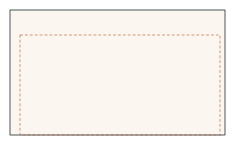
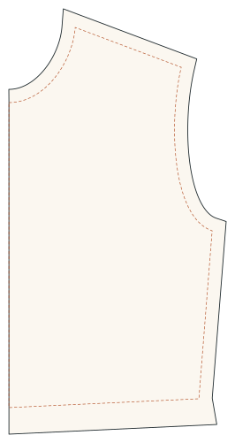
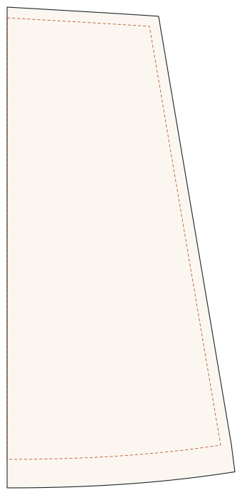
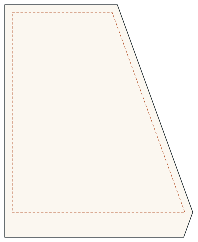
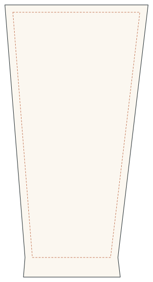
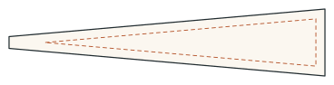
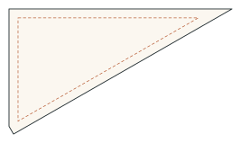
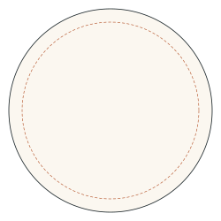
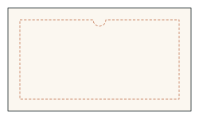
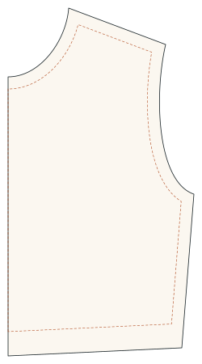

Seam allowance gallery
Dashed: stitching line (or derived stitching line). Solid: cutting line. Generated by cargo test -p drapewright-pattern-core --test gallery.
Rectangle
Even 10 mm allowance, pointed corners.

Mixed widths
25, 5, 0 and 10 mm on the four sides.

Bodice front
Curved neckline and armhole, 15 mm seams, 30 mm folded-back waist hem, centre front on the fold.

Flared skirt
40 mm hem folded back to follow the flared side seam; centre front on the fold.

Deep hem, wide flare
20° flare with a 50 mm hem: the folded-back end is narrower than the hem, so the corner is trimmed.

Tapered leg hem
Trouser leg narrowing to the hem: the hem allowance flares out to match the leg above.

Sharp point
10° point: the pointed corner is cut square 40 mm (4 × 10 mm) out.

Squared corner
Acute corner with a squared end on one edge.

Circle
Allowance on a circle is a circle.

Tight inward curve
8 mm curve with 15 mm allowance: the cutting line bridges it without looping.

Bodice, allowance included
Allowance included: the stitching line is derived inside the cutting line.